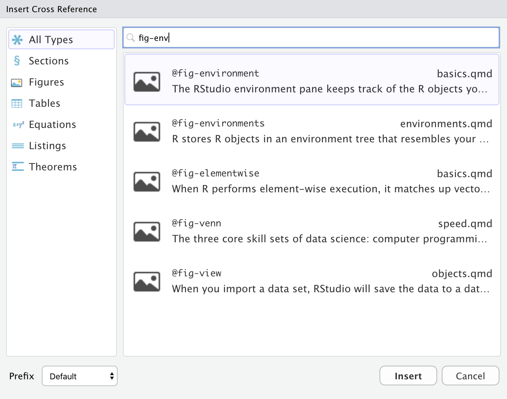
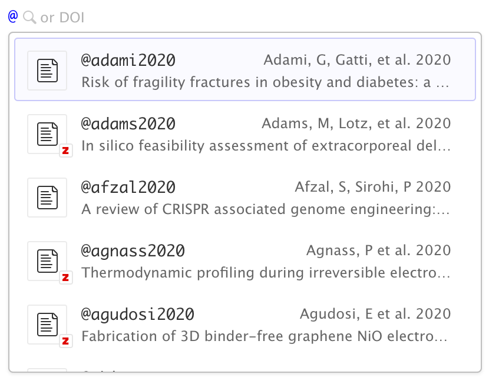

Technical Writing
Visual mode includes extensive support for Quarto features frequently used in technical writing including equations, citations, cross-references, footnotes, embedded code, and LaTeX. This article describes using these features in more depth.
Equations
LaTeX equations are authored using standard Pandoc markdown syntax (the editor will automatically recognize the syntax and treat the equation as math). When you aren’t directly editing an equation it will appear as rendered math:

As shown above, when you select an equation with the keyboard or mouse you can edit the equation’s LaTeX. A preview of the equation will be shown below it as you type.
Cross References
Cross References make it easier for readers to navigate your document by providing numbered references and hyperlinks to various entities like figures, tables, and equestions.
Every cross-referenceable entity requires a label (unique identifier) and caption (description). For example, this is a cross-referenceable figure:
{#fig-elephant}The presence of the caption (“Elephant”) and label (#fig-elephant) make this figure referenceable. This enables you to use the following syntax to refer to it elsewhere in the document:
See @fig-elephant for an illustration.Here is what this would look like rendered to HTML:

See the article on Cross References for full documentation on creating cross references and customizing their display.
Use the Insert -> Cross Reference… command to insert a cross reference:

You can also just type prefix of a cross reference label (e.g. @fig-env) and select it via auto-complete:

Similar to hyperlinks, you can also navigate to the location of a cross-reference by clicking the popup link that appears when it’s selected:

You can also navigate directly to any cross-reference using IDE global search:

Footnotes
You can include footnotes using the Insert -> Footnote command (or the ⇧⌘ F7 keyboard shortcut). Footnote editing occurs in a pane immediately below the main document:

By default footnotes will be written in markdown immediately below the block in which they appear. You can customize this behavior via editor options.
Embedded Code
Source code which you include in a Quarto document can either be for display only or can be executed by Jupyter or Knitr as part of rendering. Code can furthermore be either inline or block.
Displaying Code
To display but not execute code, either use the Insert -> Code Block menu item, or start a new line and type either:
```(for a plain code block); or```<lang>(where <lang> is a language) for a code block with syntax highlighting.
Then press the Enter key. To display code inline, simply surround text with backticks (`code`), or use the Format -> Code menu item.
Code Chunks
To insert an executable code chunk, use the Insert -> Code Chunk menu item, or start a new line and type:
```{r}
Then press the Enter key. Note that r could be another language supported by knitr (e.g. python or sql) and you can also include a chunk label and other chunk options.
To include inline R code, you just create normal inline code (e.g. by using backticks or the ⌘ D shortcut) but preface it with r. For example, this inline code will be executed by knitr: `r Sys.Date()`. Note that when the code displays in visual mode it won’t have the backticks (but they will still appear in source mode).
Running Chunks
You can execute the currently selected R or Python code chunk using either the run button at the top right of the code chunk or using the ⇧⌘ Enter keyboard shortcut:

You can execute code chunks up to the current one using the toolbar button or using the ⌥⌘ P keyboard shortcut.
LaTeX and HTML
You can also include raw LaTeX commands or HTML tags when authoring in visual mode. The raw markup will be automatically recognized and syntax highlighted. For example:

The above examples utilize inline LaTex and HTML. You can also include blocks of raw content using the commands on the Format -> Raw menu. For example, here is a document with a raw LaTeX block:

Note that Pandoc ignores LaTeX commands when not producing LaTeX based output, and ignores HTML tags when not producing HTML based output.
Citations
Visual mode uses the standard Pandoc markdown representation for citations (e.g. [@citation]). Citations can be inserted from a variety of sources:
- Your document bibliography.
- Zotero personal or group libraries.
- DOI (Document Object Identifier) references.
- Searches of Crossref, DataCite, or PubMed.
If you insert citations from Zotero, DOI look-up, or a search then they are automatically added to your document bibliography.
Bibliographies
Pandoc supports bibliographies in a wide variety of formats including BibTeX and CSL. Add a bibliography to your document using the bibliography YAML metadata field. For example:
---
title: "My Document"
bibliography: references.bib
link-citations: true
---Note that we’ve also specified the link-citations option, which will make your citations hyperlinks to the corresponding bibliography entries.
See the Pandoc Citations documentation for additional information on bibliography formats.
Inserting Citations
You insert citations by either using the Insert -> Citation command or by using markdown syntax directly (e.g. [@cite] or @cite) .
Citations go inside square brackets and are separated by semicolons. Each citation must have a key, composed of ‘@’ + the citation identifier from the database, and may optionally have a prefix, a locator, and a suffix. The citation key must begin with a letter, digit, or _, and may contain alphanumerics, _, and internal punctuation characters (:.#$%&-+?<>~/). Here are some examples:
You can also write in-text citations, as follows:
See the Pandoc Citations documentation for additional information on citation syntax.
Use the  toolbar button or the ⇧⌘ F8 keyboard shortcut to show the Insert Citation dialog:
toolbar button or the ⇧⌘ F8 keyboard shortcut to show the Insert Citation dialog:

Note that you can insert multiple citations by using the add button on the right side of the item display.
Markdown Syntax
You can also insert citations directly using markdown syntax (e.g. [@cite]). When you do this a completion interface is provided for searching available citations:

Citation IDs
Before inserting a citation from an external source you will may wish to customize it’s ID. Within the Insert Citation dialog, click the edit button on the right side of citations to change their ID:

If you insert a new citation via code completion, you will also be provided with the opportunity to change its default citation ID.
For citations inserted from Zotero, you can also use the Better BibTeX plugin to generate citation IDs (this can be enabled via Citation Options if you have Better BibTeX installed).
Citation Preview
Once you’ve inserted a citation, place the cursor over it to see a preview of it along with a link to the source if one is available:

Citations from DOIs
Use the From DOI pane of the Insert Citation dialog to insert a citation based on a DOI (e.g that you have retrieved from a PubMed or other search):

If you are using markdown syntax, you can also paste a DOI after the [@ and it will be looked up:

Once you’ve confirmed that it’s the correct work (and possibly modified the suggested ID), the citation will be inserted into the document and an entry for the work added to your bibliography.
Citations from Search
Use the Crossref, DataCite, and PubMed panes of the Insert Citation dialog to search one of those services for a citation:

Items inserted from a search will automatically be added to your bibliography.
Note that for PubMed queries you can use the full supported query syntax. For example, this query searches on the author and title fields: Peterson[Author] AND Embolism[Title]. You can learn more about building PubMed queries here: https://pubmed.ncbi.nlm.nih.gov/advanced/.
Citations from Zotero
Zotero is a popular free and open source reference manager. If you use Zotero, you can also insert citations directly from your Zotero libraries. If you have Zotero installed locally it’s location will be detected automatically and citations from your main library (My Library) will be available:

Zotero references will also show up automatically in completions:

Items from Zotero will appear alongside items from your bibliography with a small “Z” logo juxtaposed over them. If you insert a citation from Zotero that isn’t already in your bibliography then it will be automatically added to the bibliography.
If you are running both RStudio and Zotero on your desktop, then no additional configuration is required for connecting to your Zotero library. If however you using RStudio Server and/or want to access your Zotero library over the web, then a few more steps are required (see the Zotero Web API section for details).
Group Libraries
Zotero Groups provide a powerful way to share collections with a class or work closely with colleagues on a project. By default, Zotero Group Libraries are not included in the Insert Citation dialog or citation completions. However, there are options available to use group libraries at a global, per-project, or per-document level.
For example, here we specify a project-level option to use the Reproducible Research Series (Year 1) group library:

You can also specify one or more libraries within YAML. For example:
---
title: "Reproducible Research"
zotero: "Reproducible Research Series (Year 1)"
---Note that you can also turn off Zotero entirely for a document using zotero: false:
---
title: "Reproducible Research"
zotero: false
---Zotero Web API
If you are using RStudio Server and/or don’t have Zotero installed locally, you can still access your Zotero library using the Zotero Web API (assuming you have a Zotero web account and have synced your libraries to your account).
If you are running RStudio Desktop, it’s generally easier to also run Zotero on your desktop and access your library locally. That said, it is possible to access Zotero web libraries from RStudio Desktop if you prefer that configuration.
API Access Key
RStudio accesses Zotero web libraries using the Zotero Web API, so the first step is to create a Zotero account and then configure Zotero to sync it’s data to your account. You can do this using the Sync tab of the Zotero preferences:

Once you’ve configured your library to sync, you need to create a Zotero API Key to use with RStudio:

Follow the instructions to create a new access key. Note that if you want to use Group Libraries with RStudio that you should change the default to provide read-only access to groups (as illustrated above).
Be sure to record your key after generating it (i.e. copy it to the clipboard and/or save it somewhere more permanent) as you won’t be able to view it again after you navigate away.
Finally, go to the R Markdown -> Citations preferences to connect Zotero to RStudio using your key:

Set the Zotero Library option to “Web”, then paste in your Zotero Web API Key. You can use Verify Key… button to confirm that your Zotero API key is working correctly.
Once you’ve confirmed your connection you are ready to start inserting citations from Zotero.